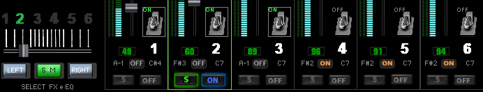
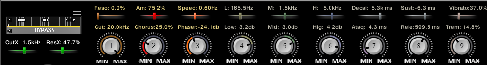
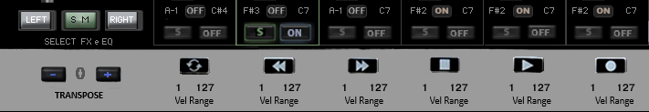
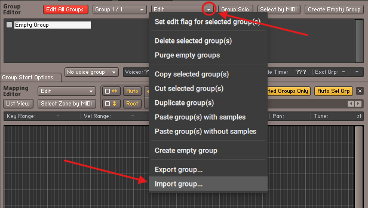
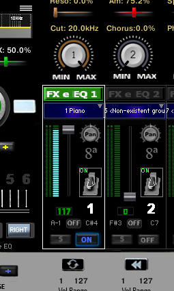

TOCA SAMPLE

Um novo conceito para Samples
Diferente das livrarias que já estamos acostumados a consumir, apresento uma nova proposta: o Toca Sample.
Nas livrarias, recebemos centenas de samples, assim como nos velhos discos de vinil com várias músicas. Mas, às vezes, queríamos uma sequência de nossas músicas prediletas, onde cada música estava em um vinil diferente. A solução era o velho toca-fitas, onde muitas vezes gravávamos com uma qualidade questionável.
Para atender à minha necessidade de reunir meus samples prediletos em um só lugar e com todos os controles que eu poderia precisar em primeiro plano, iniciei despretensiosamente este projeto entre uma corrida e outra como motorista de Uber..
O programa não vem com samples, assim como o toca-fitas também não vinha com as fitas nem as músicas. Mas, nesta primeira versão beta, vem com suporte para 20 samples, que você pode escolher entre os que já tem e importar para ele.
O processo é simples para que já lida com Kontakt mas pode ser um pouco complicado para iniciantes, porem irei descrever aqui em detalhes como fazê-lo.
Características e controles do toca Sample
Apesar de vir com 6 canais, não aconselho usar todos ao mesmo tempo, pois, dependendo do seu equipamento, o consumo de CPU pode ficar elevado. A ideia de 6 canais é já ter à mão um timbre que você possa precisar na música seguinte, conveniente para quem toca ao vivo. Porém, há um menu em cada canal para escolher um dos 20 timbres de sample importados por você.

Na imagem acima, temos os controles de volume, que acendem no final do curso, balanço (Pan), liga e desliga do canal em ON e o liga e desliga no próprio pedal (acende quando pisamos no pedal). Em cima deste, ajustamos as oitavas “8ª”. Note que alguns controles na posição inicial ficam sem cor. Abaixo dos pedais, temos a seleção da nota referente à tecla que inicia a atuação do canal no teclado, e a nota referente à tecla que finaliza a atuação do canal no teclado. Entre estes, há o ON que liga e desliga esta função, e o canal passa a atuar ou não em todas as teclas do teclado.
Na figura acima à esquerda, temos o seletor de 6 canais, um controle deslizante na horizontal com 6 posições, onde escolhemos o canal que vamos ajustar os demais controles EQ e FX. Os knobs Left e Right também atuam para esquerda e direita.
O knob do meio, “SM” (Solo Memória), quando acionado, acende em verde e a linha que contorna o canal selecionado muda de branca para verde. Este serve para silenciar os demais canais. Você pode percorrer os outros canais via seletor, solando um de cada vez. Quando você desligar o “SM”, ele restabelece os canais no modo em que estavam ligados antes. Os knobs “S” solo, que aparecem em cada canal, podem solar mais de um canal ao mesmo tempo. Dica: em vez de desligar o solo, acione 2x o “SM” que os canais voltarão como estavam antes.
Obs: Os controles podem ser mapeados com seu controlador, à exceção apenas do “Vel Range”, que veremos mais adiante. Apontando o mouse no controle, temos no rodapé do Kontakt uma breve descrição do controle. Segurando a tecla Ctrl e clicando em cima do controle, ele vai retornar à posição padrão inicial.
Na figura acima, encontramos os filtros e efeitos FX/EQ. Partindo da esquerda, temos um menu onde selecionamos um de 31 filtros diferentes: LP, que corta frequências altas; HP, que corta frequências baixas; entre outros filtros, com uma imagem de referência ao efeito selecionado. Abaixo destes, temos CutX, que define o ponto de corte da frequência selecionada, e ResoX, que ajusta a intensidade da ressonância no ponto de corte. Continuando, encontramos “Cut” e, acima deste, também em marrom, o seu respectivo “Reso”. Ambos atuam como CutX e ResoX, citados anteriormente, porém é um filtro único SV LP 2. À sua direita, temos “Chorus” (ajusta a profundidade do efeito) e, acima, também em vermelho, “Amount” (ajusta o quanto do efeito de chorus é misturado com o som original). Seguindo ainda na figura acima, “Phaser” ajusta a profundidade do efeito e “Speed” ajusta a velocidade do efeito de Phaser, ambos em laranja.

Em amarelo temos "Low" (controle de graves) em cima deste "L"" controla a faixa de frequência que Low atua, o mesmo para "Mid"(médios) "M" em verde e "Hig" (agudos)"H" em azul. Na sequencia iniciamos o ADSR (Ataque, Decai, Sustain, Release) sendo "ATA"(Ataque) em lilas e "Dec", "Sus" e "Rel" em cinza. Por ultimo chegamos ao "Trem" (Tremulo) e "Vibrat"(Vibrato) ambos em laranja (costumo usar estes dois na roda de modulação mas os cut e reso tbm geram um efeito legal)
Note que cores e proximidade se correlacionam com os controles. Todos os controles se ajustam conforme você seleciona o canal ou memória, lembrando da posição em que aquele canal ou memória selecionado estava.

Na parte inferior direita, temos os controles de “Reverb” e um menu abaixo, onde selecionamos o tipo de reverb. Ao lado direito, temos o “Delay” (Eco) e, abaixo deste, seus respectivos ajustes: “Time” (tempo entre repetições), “Feedback” (quantidade de repetições) e “Depth” (intensidade de modulação). Finalizando, à direita inferior, temos “Vel” (Velocidade de toque). Quanto mais elevado este controle, maior a sensibilidade das teclas do canal e, por consequência, menor o volume. Quando baixamos, devemos atentar que o volume aumenta, podendo distorcer na saída. Por consequência, as teclas também perdem sensibilidade (você toca leve e sai mais alto), diminuindo a curva de resposta (interessante baixar a sensibilidade e volume para PADs, cama…)..
Na figura acima, à esquerda, temos “Transpose”, que aumenta e diminui até 12 semitons. Podemos também selecionar com o mouse entre o “+” e o “-”. À direita, temos “Vel Range”, cada canal alinhado com um. São dois controles em forma de números, que selecionamos apenas com o mouse. O primeiro, “1” na imagem, só deixa tocar na velocidade acima do valor selecionado, e o segundo, “127” na imagem, só deixa tocar na velocidade abaixo do selecionado (você pode selecionar um instrumento quando toca leve e outro quando toca mais forte). Acima destes, deixei apenas como referência, alinhadas com os canais (não fazem nada), o desenho do meu mini controlador, onde iniciei este projeto, com o intuito de que outros que tenham controladores iguais ou parecidos possam usar as respectivas teclas do controlador para alguma função por canal e se posicionar melhor.

Finalizando a apresentação, temos o volume geral, que alerta quando passamos de 0,2dB. E, por último, “V.CURVE” (Curva de Velocidade), que aplica o mesmo princípio da “Vel” por canal, só que este é geral do teclado, com um range de -50 a +50. Nesta imagem, está ajustado para o meu teclado em +10
Exportando Samples
Este processo de importar e exportar pode ser um pouco burocrático a primeira vez , porem depois que aprendemos fica bem fácil. Abra no Kontakt e coloque para tocar o sample que vc quer exportar, Isso é importante para evitar que os samples venham desabilitados, (eles aparecem marron no "Mapping editor" e não tocam), em cima a esquerda clique na  em seguida clique em Group Editor e Mapping Editor,destacado na imagem a baixo
em seguida clique em Group Editor e Mapping Editor,destacado na imagem a baixo

1º se houver mais de um instrumento de um clique em cima do que vai ser exportado para seleciona-lo conforme fig abaixo primeira seta a esquerda, (Obs: Quando tocamos, o sample que esta ativo com as letras ou fundo branco, mudam para amarelo no Group Editor) 2º, clique em "Edit", em seguida em "Export group" conforme as setas indicam para exportar o sample ativo

Em seguida abrira a tela para salvar o sample, nesta selecione a opção "Monolith" (escolhi esta para simplificar o processo) depois escolha o local aonde vai salvar conforme ilustra a fig. abaixo.
Pronto seu sample esta salvo e na maioria das vezes já esta pronto para ser importado, porem alguns samples podem vir com alguma alteração como mostrarei mais a frente.
Importando Samples
Abra agora abra o Toca Sample e em cima a esquerda clique na em seguida clique em Group Editor e Mapping Editor,destacado na imagem a baixo

Clique em "Edit" em seguida em "Import group" conforme ilustra a figura abaixo.
 Agora abrirá a tela para importar o sample, selecione o local onde ele foi salvo, de um clique nele e outro em abrir, conforme figura abaixo.
Agora com o sample importado, é hora de arrumar a casa, começamos renomeando o sample (evite nomes extensos pois este vai aparecer no menu e quando selecionado no painel). Delete Empty grupo (ele é um grupo vazio) clicando nele com botão direito do mouse e selecionando "Delete Selected Group(s)"

Se tudo correr bem, renomeado para Piano, estará como a imagem abaixo, e agora clicamos na e Voltamos para tela principal do Toca Sample.

Clique na "!" no canto direito superior do Kontakt, conforme figura abaixo para atualizar" .

Clique no primeiro menu em azul conforme seta da direita na figura abaixo, em seguida selecione o Piano (o mesmo que foi renomeado) .

Ligue o canal em ON Aumente o volume e se tudo correr bem seu sample já deve estar tocando.
Em media de cada 15 samples que importo, 1 da algum problema, mas sempre tem como resolver. Mas tenho algumas dicas: 1ª, segure a tecla control e va clicando em todos os controles isso faz eles voltarem para posição inicial. 2º verifique se os controles "Dec" e "Sus" estão atuando e no máximo, caso não esteja atuando clique na no Grupo editor de um clique no instrumento que vc acabou de importar para seleciona-lo, em seguida dessa até Amplifier, caso não mostre Envelope(ADSR) e Velocity, clique em "Mod" , é esperado uma tela com a figura abaixo com apenas um Envelope(ADSR) e um Velocity
Caso apareça mais de um, como na figura abaixo sera necessário pegar o sample e importar para ou novo instrumento vazio no Kontakt e excluir os ADSR e levar de volta para o Toca Sample, existem outras formas de resolve ,mas acho que essa é a mais simples de entender

Também pode acontecer de o som ficar preso, so tocando uma nota de cada vez, pra resolver é simples: coloque 128 no lugar de 1 em "Voices" conforme ilustra figura abaixo